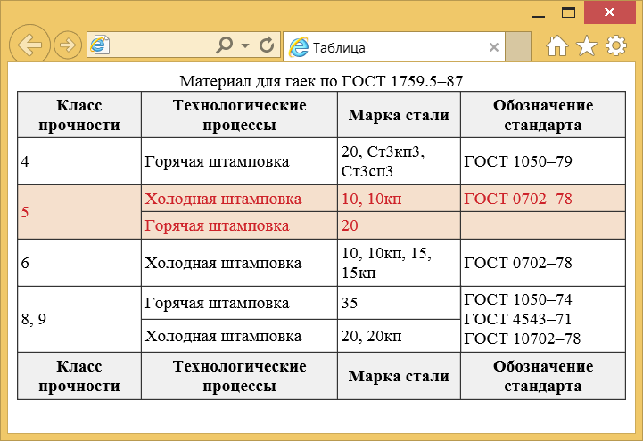

Структура таблицы
Каждая таблица состоит из строк и ячеек, минимально может быть одна строка и одна ячейка. В таком случае, впрочем, непонятно, зачем использовать таблицу, потому что как такового табличного представления уже нет. Кроме того, таблице можно задать заголовок, который кратко описывает её содержимое, указать «шапку», «тело» и «подвал» таблицы. Они нужны для стилевого или смыслового выделения части данных. В примере 1 показано создание таблицы, содержащей все упомянутые компоненты.
Пример 1. Создание таблицы
<!DOCTYPE html>
<html>
<head>
<meta charset="utf-8">
<title>Таблица</title>
<style>
table {
width: 100%; /* Ширина таблицы */
border-collapse: collapse; /* Убираем двойные границы */
}
td, th {
border: 1px solid #333; /* */
padding: 3px; /* Поля в ячейках */
}
thead, tfoot {
background: #f0f0f0; /* Цвет фона */
}
tbody:hover {
background: #f5e0cd; /* Цвет фона при наведении курсора */
color: #ce232a; /* Цвет текста */
}
</style>
</head>
<body>
<table>
<caption>Материал для гаек по ГОСТ 1759.5–87</caption>
<thead>
<tr>
<th>Класс прочности</th>
<th>Технологические процессы</th>
<th>Марка стали</th>
<th>Обозначение стандарта</th>
</tr>
</thead>
<tbody>
<tr>
<td>4</td>
<td>Горячая штамповка</td>
<td>20, Ст3кп3, Ст3сп3</td>
<td>ГОСТ 1050–79</td>
</tr>
</tbody>
<tbody>
<tr>
<td rowspan="2">5</td>
<td>Холодная штамповка</td>
<td>10, 10кп</td>
<td>ГОСТ 0702–78</td>
</tr>
<tr>
<td>Горячая штамповка</td>
<td>20</td><td></td>
</tr>
</tbody>
<tbody>
<tr>
<td>6</td>
<td>Холодная штамповка</td>
<td>10, 10кп, 15, 15кп</td>
<td>ГОСТ 0702–78</td>
</tr>
</tbody>
<tbody>
<tr>
<td rowspan="2">8, 9</td>
<td>Горячая штамповка</td>
<td>35</td>
<td rowspan="2">ГОСТ 1050–74<br>ГОСТ 4543–71<br>ГОСТ 10702–78</td>
</tr>
<tr>
<td>Холодная штамповка</td>
<td>20, 20кп</td>
</tr>
</tbody>
<tfoot>
<tr>
<th>Класс прочности</th>
<th>Технологические процессы</th>
<th>Марка стали</th>
<th>Обозначение стандарта</th>
</tr>
</tfoot>
</table>
</body>
</html>Результат данного примера показан на рис. 1.

Рис. 1. Таблица с заголовком, «шапкой» и «подвалом»
При использовании элементов <thead>, <tbody> и <tfoot> придерживайтесь следующих правил.
- Заголовок таблицы <caption> пишется в самом верху таблицы, сразу после открывающего тега <table>.
- <thead> вставляется вверху таблицы, сразу после заголовка, если он присутствует.
- <tfoot> вставляется после <tbody>, при этом отображается всегда в самом низу таблицы.
- Элемент <tbody> для таблиц нужен обязательно, но для простых таблиц без <thead> и <tfoot> его можно не указывать. Браузеры сами научились вставлять его автоматически в код, понимая, что большинство разработчиков ленятся добавлять элемент, который визуально никак не влияет на таблицу.
- <tbody> может быть один или несколько, вы сами решаете, по какому принципу их добавлять. Например, в примере выше в некоторых строках имеются объединения ячеек и чтобы строки при наведении на них курсора мыши выделялись как нам требуется, мы их объединяем в <tbody> согласно нашей логике.
Колонки
Кроме объединения группы строк через <thead> есть ещё один способ группирования ячеек — по колонкам с помощью элементов <col> и <colgroup>. Каждая колонка таблицы сопоставляется со своим элементом <col> который пишется после открывающего тега <table>. Часть колонок можно объединять с помощью атрибута span, его значением выступает число объединяемых колонок. Элементы <col> допустимо помещать в один или несколько <colgroup>, объединяя колонки согласно нашим понятиям.
Элементы <col> и <colgroup> никак не влияют на вид таблицы и её отображение в браузере и применяются только со стилями, как показано в примере 2. Между колонками здесь добавляются двойные линии.
Пример 2. Колонки таблицы
<!DOCTYPE html>
<html>
<head>
<meta charset="utf-8">
<title>Таблица</title>
<style>
table {
width: 100%;
border-collapse: collapse;
}
td, th {
border: 1px solid #333;
padding: 3px;
}
col { border-left: 4px double #333; }
col:first-child { border-left-width: 1px; }
</style>
</head>
<body>
<table>
<colgroup>
<col>
<col span="3">
<col>
</colgroup>
<tr>
<th rowspan="2">Класс прочности гайки</th>
<th colspan="4">Сопрягаемые болты</th>
</tr>
<tr>
<th colspan="3">Класс прочности</th>
<th>Диаметр резьбы</th>
</tr>
<tr>
<td>4</td><td>3,6</td>
<td>4,6</td><td>4,8</td>
<td>> М16</td>
</tr>
<tr>
<td>5</td><td>5,6</td>
<td>5,8</td><td></td>
<td>≤ М16</td>
</tr>
<tr>
<td>6</td><td>6,8</td>
<td></td><td></td>
<td>≤ М48</td>
</tr>
</table>
</body>
</html>Результат данного примера показан на рис. 2. Заметим, что похожего результата можно добиться заменив в стилях селектор col на td и th.

Рис. 2. Двойные линии между колонок